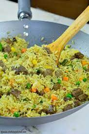

Fried Rice: A Delicious Meal.
In the native of Nigeria, it has been one of our most cherished delicacy, it goes way back to the 1900s.
More details about this recepie incomming.
Ingredients required to prepare this recepie are as follows:
- Vegetable Oil
- Salt
- Peas
- Onions
- Bell pepper
- Rice
- Curry
- Meat: Chiken or Beef
- Carrot
Steps required for preparing this recepie are as follows:
- Parboil the rice (remove the starch).
- Boil your meat with your prefered spice (containing at least: Salt and onion).
- Fry the meat.
- Fry the peas, carrot, onions, chopped liver, bell pepper all together under, mild heat.
- Add the meat broth to the parboiled rice, add a good amount of curry seasoning and boil properly.
- After the rice has been cooked properly, add the fried veges (including the oil) to the rice and stair properly.
- Allow to heat for 5-10mins extra whilist staring it continiously.